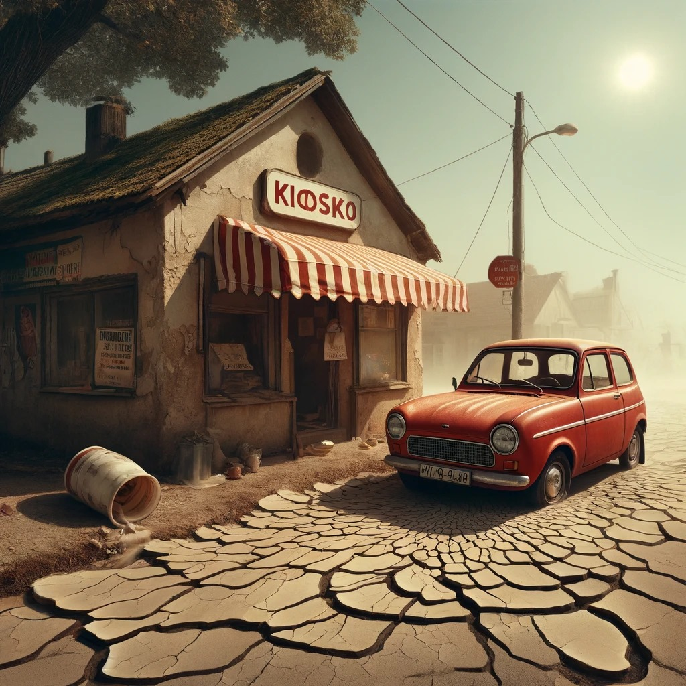
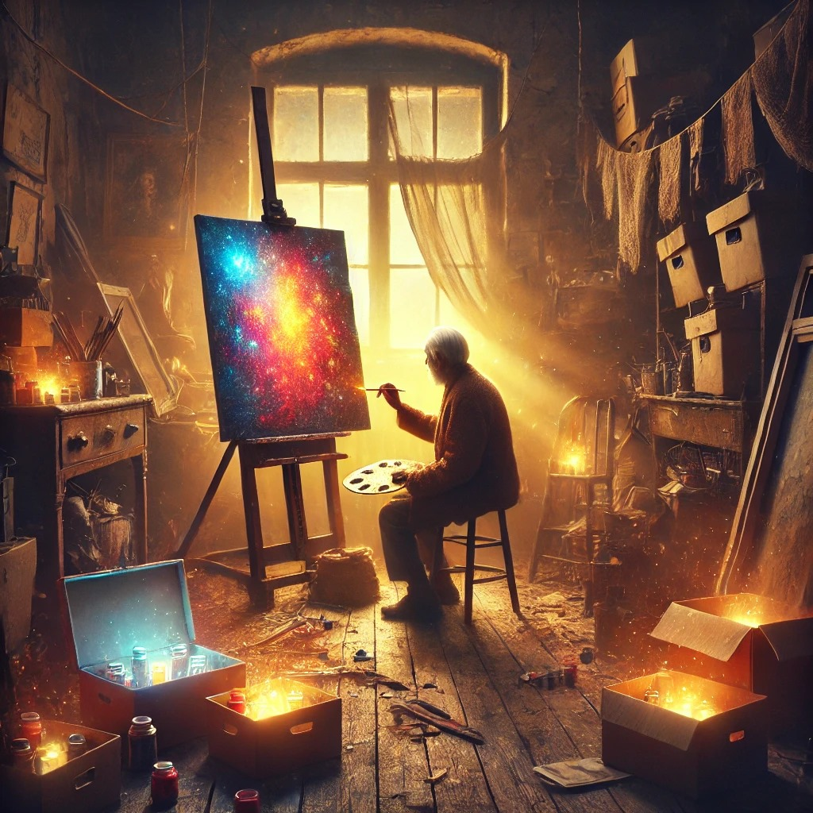
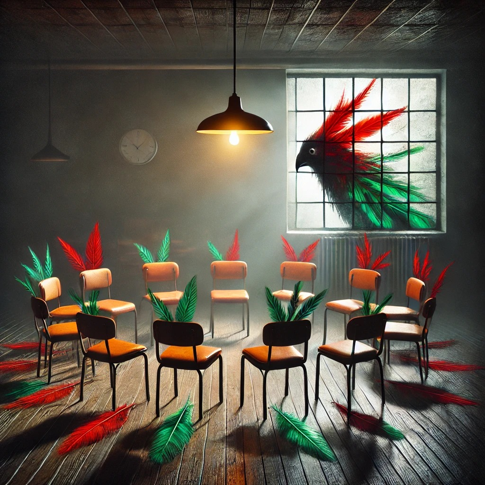
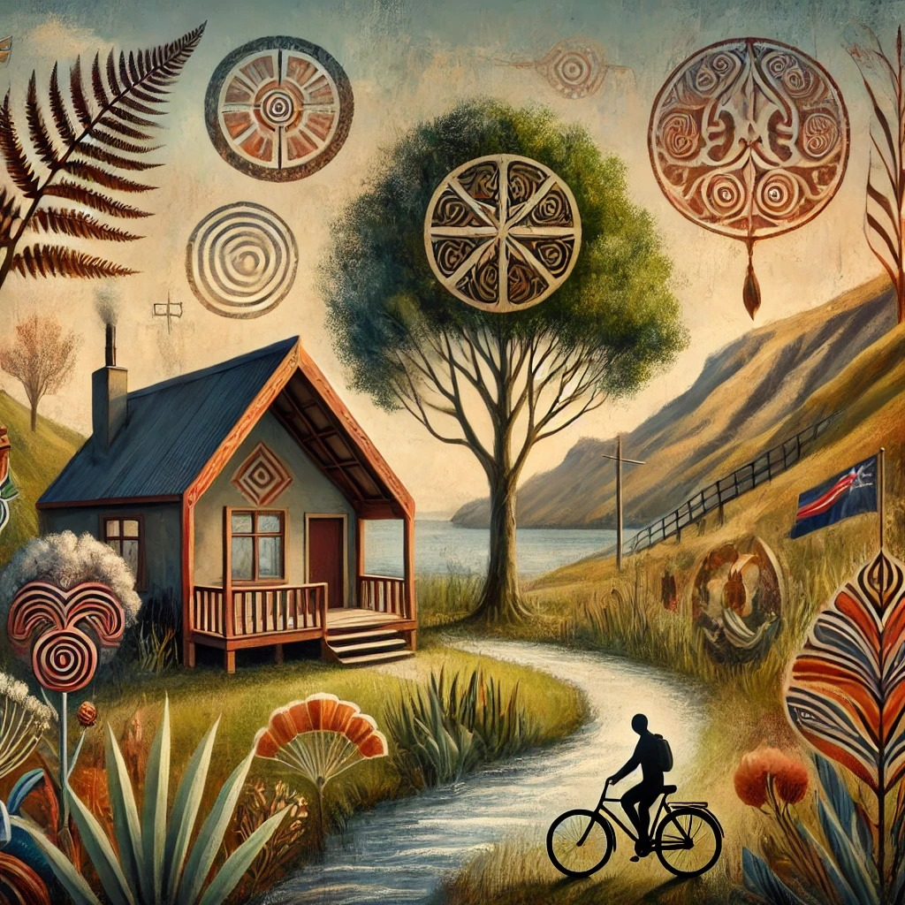

A lo largo de estos cinco años se han escrito muchísimos cuentos en el taller. A continuación, presentamos algunos, una pequeña muestra para leer de lo que fuimos haciendo.
Es que ella solo quiere conocer a los caimanes
Por Esteban Iturain
Desde un principio le pareció mala idea. ¿Llevar a Sabina? Aquel no iba a ser un trabajo simple y sencillo como para transformarlo en una excursión.
Culpa del ron y Olazábal
Por Sol Rena
¿Qué hago? ¿Me volví loco?, se preguntó Dante. Eran las dos de la mañana. Nunca se le tiene que hablar a alguien por mensaje a esa hora.
Pedacito de bujía
Por Matías Bustamante

Hacía un solcito considerable. Casi podíamos sentir el crepitar de la piel cocinándose. Justo igual que cuando se hace un churrasco.
El color de los años
Por María Borrell

Ese pincel olvidado de madera me susurraba que pintara. La idea de volver a crear figuras y matices en un lienzo gigante me seducía.
El pájaro vivo
Por Valentina Bär Larralde

Chocan las pelotas imantadas. Tintineo metálico. Ruido incómodo que da comienzo a la jornada, vibra en la misma sintonía que nosotros.
Sangre dorada
Por Andrés Senestrari

Mi nombre es Juan Manuel y nací en la Ciudad de Buenos Aires con los festejos del nuevo milenio. Me crie en el barrio porteño de...